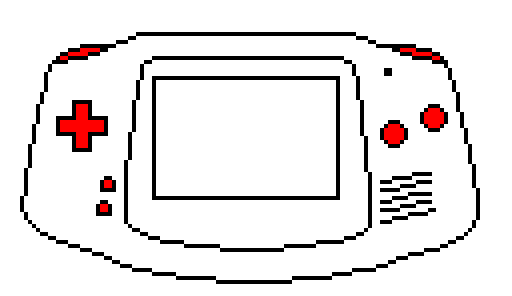
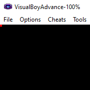

If you haven't already open up the Programmer's Notepad or whatever editor you're using and create a new empty project. This will usually be the first task in all of our projects, so that's why I've created a page that explains how to create an empty project and get it ready for our code. If you need help setting the project up, look at the sidebar on the right.
Keys / Buttons

The Gameboy Advance has 10 buttons or keys. Check out the image on the right and you'll see all of the buttons colored red. Before you look at that and tell me that I'm wrong and that there are only 7 buttons, keep in mind that the directional pad has 4 buttons.
These are all of the buttons on the Gameboy Advance:
- UP
- DOWN
- LEFT
- RIGHT
- B
- A
- L
- R
- START
- SELECT
This section is all about what we have to do in order to use the buttons in the most common ways.

Setup
Keypad Register
There's a register that keeps track of which keys are being pressed. This register has the memory location of 0x04000130 and is of course 2 bytes wide and is read-only. That makes sense since there's really no reason you would need to write to it. Which bits correspond to which buttons are shown on the right. What's interesting about this register is all of the bits that correspond to the keys normally have a value of 1 instead of 0. You would think that all of the bits would be 0 if no keys are being pressed, and then when a certain key is pressed that bit would turn to a value of 1. It's actually the opposite. The bits are set to have a value of 1 and when a key is pressed, that bit changes its value to 0. So when no keys are being pressed this register has a value of 0x03FF.
So determining when a key is being pressed is pretty easy, we just need to watch when that keys bit turns to 0. Lets see how all of that works next.
REG_KEYS
0x0400:0130
0x03FF
| F | E | D | C |
|---|---|---|---|
| 0 | 0 | 0 | 0 |
| B | A | 9 | 8 |
|---|---|---|---|
| 0 | 0 | L | R |
| 7 | 6 | 5 | 4 |
|---|---|---|---|
| Down | Up | Left | Right |
| 3 | 2 | 1 | 0 |
|---|---|---|---|
| Start | Select | B | A |
Create program
Assuming you now have your project set up, the first thing we're going to do is create a file called main.cpp and stick the the following code into it. There's really only 4 lines of code to worry about, but it probably all looks like gibberish to you. Well, the first 2 lines should look like gibberish, but the last 2 lines should look familiar if you've programmed in C or C++ before.
The while(1); line just means to loop forever. You actually don't need it in this particular program for it to work. I always just include it by default since it's basically the game loop. When we start working on more complicated projects, then we'll put stuff in that loop, but for now it's empty.
The return 0 line is standard in C and C++. Notice that our main function has to return an integer when the program finishes. If some error occurred in the program and it has to terminate early then some integer will be returned that corresponds to some error code. If it makes it to this line here, then we can assume that everything ran fine and we can return 0, meaning that no errors have occurred.
Now for the next two gibberish lines, which I'll explain below.
main.cpp
int main()
{
*(volatile unsigned short*)0x04000000 = 0x0403;
*(volatile unsigned short*)0x06000000 = 0x001F;
while(1);
return 0;
}
*(volatile unsigned short*)0x04000000 = 0x0403;
The first line is shown above for easy reference. This looks like a mess and you should never program this way unless you really like making life hard on yourself. In the future we'll make lines like this more readable, but I think it helps to see it in its more or less raw form. The GameBoy Advance has a bunch of registers that serve different purposes. Most of these registers are 16 bits wide and stored in an area of memory called the Input / Output Memory or IORAM which starts at memory address 0x0400:0000h.
Below is one such register called the display register. It's conveniently located in the first location in the IORAM, that is it has the same memory address of 0x0400:0000h. There are various settings in here that we can set. I'm not going to go over everything, just what we need to know for this project. So, there's really only 2 things we need to set: The mode we're using and which background to use.
Bits Layout
For our purposes, these are the bits we want to set for the display register. If you go to the link above you can see exactly what these bits correspond to. The first two bits on the end tells the Gameboy Advance to use mode 3. Mode 3 is a bitmap mode and allows us to draw individual pixels to the screen.
The third bit we have set says that we want to use background 2. You have to use background 2 in mode 3. Try using the other backgrounds, they won't work. So make sure you have this bit set or you won't see anything on your screen.
REG_DISP
0x0400:0000
0x0403
| F | E | D | C |
|---|---|---|---|
| 0 | 0 | 0 | 0 |
| B | A | 9 | 8 |
|---|---|---|---|
| 0 | 1 | 0 | 0 |
| 7 | 6 | 5 | 4 |
|---|---|---|---|
| 0 | 0 | 0 | 0 |
| 3 | 2 | 1 | 0 |
|---|---|---|---|
| 0 | 0 | 1 | 1 |
*(volatile unsigned short*)0x06000000 = 0x001F;
Knowing what we know from the explanation above this probably doesn't look as intimidating now right? We can see that we are storing a 2 byte value into memory location 0x0600:0000. The two questions you need to be asking are, what does that 2 byte value mean and why are we storing it here?
First off, the memory address 0x0600:0000 refers to Video Memory or VRAM for short. The Gameboy Advance has 96KB of VRAM and this is where it starts. In mode 3 location in VRAM corresponds directly to the location of pixels on the screen. The first pixel on the screen is in the top left corner, so this should correspond to the first memory address in VRAM.
The value we're trying to store in this location represents a color. In fact, it represents the color red. I would suggest you click on the link to learn more about colors on the Gameboy Advance.
Bits Layout
So these two bytes represent the color red. We know this because all of the 5 red bits are set and none of the other bits are set. You can choose any color you want to use, just set the correct bits.
RED
0x0600:0000
0x001F
| x | B | B | B |
|---|---|---|---|
| 0 | 0 | 0 | 0 |
| B | B | G | G |
|---|---|---|---|
| 0 | 0 | 0 | 0 |
| G | G | G | R |
|---|---|---|---|
| 0 | 0 | 0 | 1 |
| R | R | R | R |
|---|---|---|---|
| 1 | 1 | 1 | 1 |
Compile and Run
Now that all of that is explained, all we have left to do is compile and run our little program. Please make sure you have your project set up and structured as explained in the Project Setup section and that you're Makefile is in place. Once you've done that go ahead and press "Alt+1" in order to compile your project. Now open up your Gameboy Advance emulator and navigate to your project folder and open up the file with the .gba extension. What you should see is the image on the right. You may not be able to see it, especially if you're color blind, but I would suggest making the window bigger. You can set it to x4 the window size in the Options -> Video menu.
If you don't see the red pixel then try going through everything again fresh and see if there was anything you missed. Remember, you can always shoot me an email from the Contacts page if you have any issues, questions, or to tell me how awesome I am.

Conclusion
Good job on completing this project! I wish I had a prize for you, but I think that the satisfaction of completing something is prize enough, right? Anyways, if you completed this you may be wondering how we can draw the pixel anywhere on the screen. Check out the next tutorial because that is exactly what we'll cover in that tutorial. We can even draw more than one pixel too! Then later we'll make the pixel move around the screen. So don't stop here, continue onwards in your GBA journey!